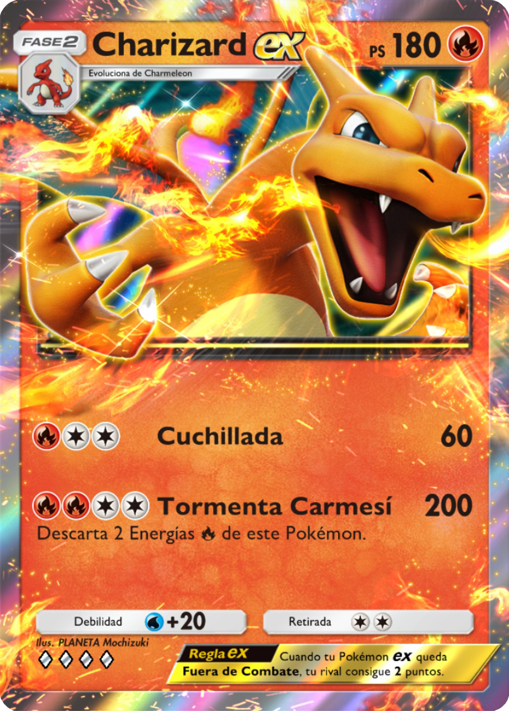

El Charizard del Base Set es probablemente la carta más icónica de toda la historia del juego. Es un Pokémon de tipo Fuego con 120 Puntos de Salud (HP).
Convierte todas las energías unidas a Charizard en energías de tipo Fuego. Esto te permite usar energías de cualquier tipo para cargar su ataque principal.
Requiere descartar dos cartas de energía unidas a este Pokémon para poder atacar.
